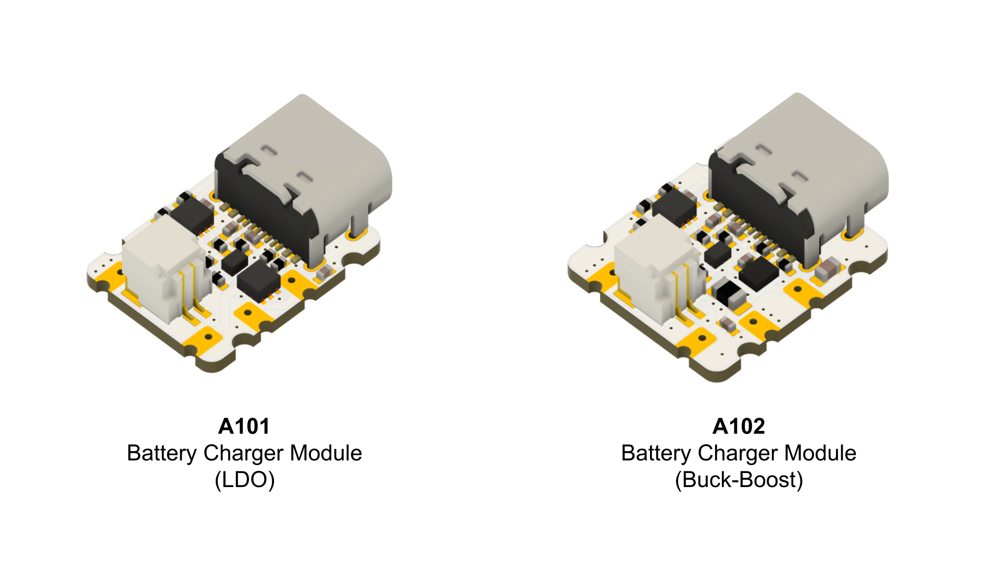
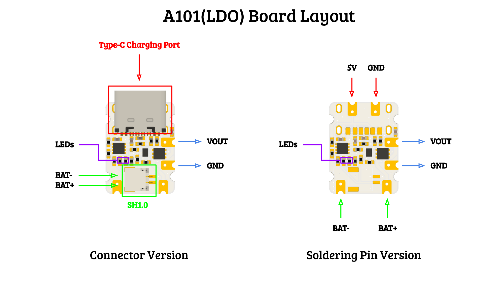
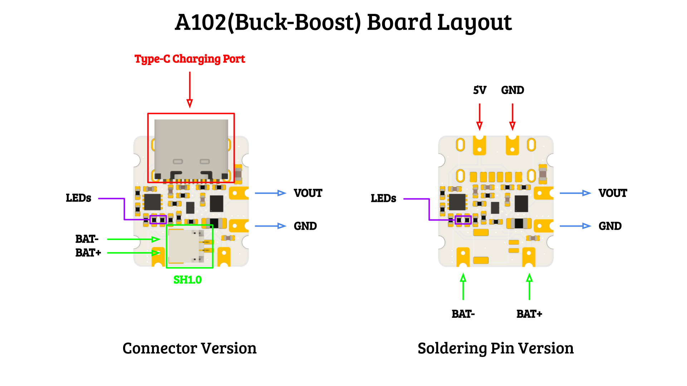

Battery Charger Module

Details
A101 and A102 are tiny battery charger module, with the following function:
- Battery Charging
- Voltage Supervision
- DC/DC Voltage Conversion
Battery Charging
A101 and A102 support 1s Lithium polymer battery, this board provide charging and discharge function to the battery. Charging current is adjustable by changing the resistor value on the board, form 50mA to 800mA, default is set to 100mA. Charging input voltage is 5V and can be connected through the Type-C port or the soldering pin on board.
Voltage Supervision
Voltage supervision is a voltage monitor function that can stop the output when the battery voltage falls below a certain threshold, and recover the output when battery voltage raise again. For the LDO version, the default cut-off voltage is 3.08V, recovery voltage is 3.4V. For the Buck-Boost version, the default cut-off voltage is 2.75V, recovery voltage is 3.3V. Both voltage threshold can be adjusted by changing the resistor value on board.
DC/DC Voltage Conversion
The board provide voltage conversion function, the output voltage can be adjusted to fit different requirements. The default output voltage is 3.3V for both version. Max output current is 1A.
Layout


Technical Specification
Battery Charging
Parameter A101 / A102 Charging Port Type-C / Soldering Pin Battery Port SH1.0 / Soldering Pin Charging Input Voltage 5V Charging Current 50mA to 800mA (default 100mA) Voltage Supervision
Parameter A101 A102 Cut-off Voltage 3.08V 2.75V Recover Voltage 3.4V 3.3V DC/DC Voltage Conversion
Parameter A101 A102 Voltage Conversion Method LDO Buck-Boost Output Port Soldering Pin Soldering Pin Output Voltage 0.55V - 3.3V 2.3 - 5.3V Default Output Voltage 3.3V 3.3V Max Output Current 1A 1A